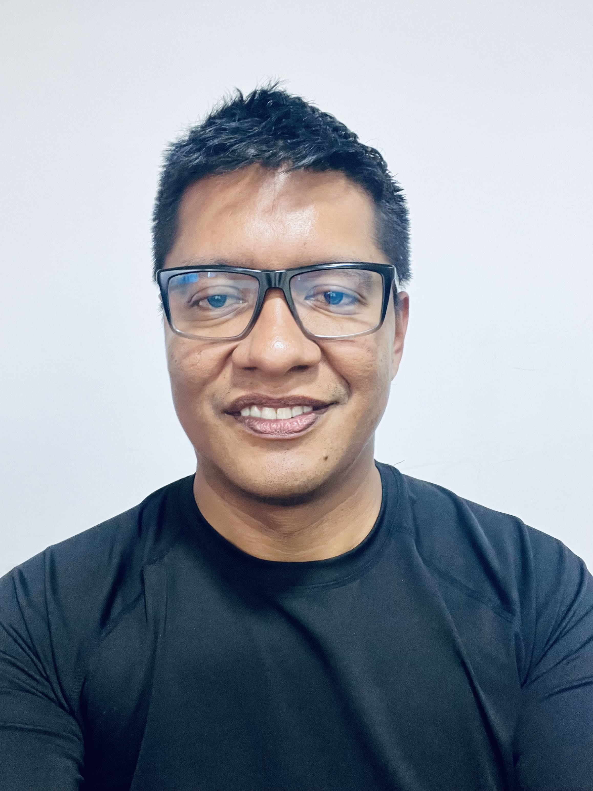

I work at the intersection of cardiac electrophysiology, biomedical signal processing, inverse problems, and physics-informed machine learning. My current research focuses on ECGI, cardiac signal reconstruction, multimodal time-series modeling, and clinically meaningful computational methods for noninvasive cardiac assessment.

Physical Engineer • MSc • PhD Candidate
Professor, Mechatronics Engineering Program
Universidad Mariana
I am a researcher, professor, and inventor with a background in physical engineering, computational engineering, and applied artificial intelligence. My academic work spans biomedical signal processing, deep learning, scientific computing, and computational modeling.
I am currently a PhD candidate in Information and Communication Technologies at the University of Granada. My research agenda is centered on noninvasive cardiac imaging, electrocardiographic imaging (ECGI), cardiac signal reconstruction, and weak physics-informed learning.
ECGI, cardiac electrophysiology, inverse electrocardiography, and noninvasive methods for assessing cardiac electrical activity.
Deep learning for biosignals, multimodal learning, sequence modeling, and clinically grounded machine learning for health applications.
Weak physics-informed learning, geometry-aware methods, and robust reconstruction under data scarcity and ill-posed conditions.
My trajectory combines higher education, research supervision, content development, scientific programming, mathematical modeling, and technology-oriented R&D. I have worked across academic and applied environments, including engineering, data science, biomechanics, embedded systems, and biomedical computing.
Research project on cardiac health analysis using 3D models of the electrical activity of the heart through electrocardiographic potential mapping.
Application of machine learning techniques for arrhythmia detection in ambulatory electrocardiographic recordings.
Development of signal acquisition and processing systems, including EMG-related hardware and computational tools.
Experience in mathematical modeling, scientific software, image processing, and embedded systems for engineering and industrial applications.
I have supervised undergraduate theses and graduate dissertations in artificial intelligence, computational engineering, biomedical applications, and applied modeling. My work also includes course design, academic content development, and interdisciplinary mentoring.
Inventor of a granted patent related to technology for teaching kinematics, reflecting an interest in practical problem solving, technology transfer, and applied innovation.